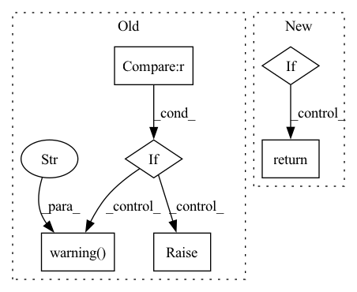

Pattern ID :5612
Before Change
)
else:
for name in experiments:
if experiments[name].id == experiment_id :
return experiments[name]
if create:
logger.warning(f"No valid experiment found. Use the Default experiment for further process." )
return self.start_exp()
else:
raise Exception(
"Something went wrong when retrieving experiments. Please check if QlibRecorder is running or the name/id of the experiment is correct."
)
After Change
else:
return self.__get_exp_by_name(create=create, run=run)
else:
if experiment_name is not None:
return self.__get_exp_by_name(experiment_name, create=create, run=run)
else:
return self.__get_exp_by_id(experiment_id, create=create, run=run)
def search_records(self, experiment_ids, **kwargs):
filter_string = "" if kwargs.get("filter_string") is None else kwargs.get("filter_string")In pattern: SUPERPATTERN
Frequency: 3
Non-data size: 6
Instances Fragment ID: 19809548
Project Name: microsoft/qlib
Commit Name: 64ed43b791ca7b22877e9e480cbeb8c5eb25c728
Time: 2020-11-17
Author: dw1920@nyu.edu
File Name: qlib/workflow/expm.py
M Class Name: MLflowExpManager
N Class Name: MLflowExpManager
M Method Name: get_exp(5)
N Method Name: get_exp(4)
M Parent Class: ExpManager
N Parent Class: ExpManager
M File Name: qlib/workflow/expm.py
N File Name: qlib/workflow/expm.py
M Start Line: 228
M End Line: 268
N Start Line: 263
N End Line: 275
Before Change
)
else:
for rid in recorders:
if recorders[rid].name == recorder_name :
return recorders[rid]
if create:
recorders = self.list_recorders()
logger.warning(f"No valid recorder found. Create a new recorder with name {recorder_name}." )
recorder = self.create_recorder()
recorder.name = recorder_name
recorder.start_run()
return recorder
else:
raise Exception(
"Something went wrong when retrieving experiments. Please check if the name of the experiment is correct."
)
After Change
else:
return self._get_recorder_by_name(create=create)
else:
if recorder_id is not None:
return self._get_recorder_by_id(recorder_id, create=create)
else:
return self._get_recorder_by_name(recorder_name, create=create)
def list_recorders(self):
runs = self.client.search_runs(self.id, run_view_type=1)[::-1]
Fragment ID: 19809562
Project Name: microsoft/qlib
Commit Name: 64ed43b791ca7b22877e9e480cbeb8c5eb25c728
Time: 2020-11-17
Author: dw1920@nyu.edu
File Name: qlib/workflow/exp.py
M Class Name: MLflowExperiment
N Class Name: MLflowExperiment
M Method Name: get_recorder(4)
N Method Name: get_recorder(4)
M Parent Class: Experiment
N Parent Class: Experiment
M File Name: qlib/workflow/exp.py
N File Name: qlib/workflow/exp.py
M Start Line: 216
M End Line: 256
N Start Line: 286
N End Line: 293
Before Change
return None
elif isinstance(pipeline, type) and issubclass(pipeline, BasePipeline):
pipeline_name = pipeline.__name__
elif "pipeline_name" in kwargs and isinstance(
kwargs.get("pipeline_name"), str
):
logger.warning(
"Using "pipeline_name" to get a pipeline from "
""get_pipeline()" is deprecated and "
"will be removed in the future. Instead please "
"use "pipeline" to access a pipeline in your Repository based "
"on the name of the pipeline or even the class or instance "
"of the pipeline. Learn more in our API docs: %s" ,
get_apidocs_link(
"core-repository", "zenml.post_execution.pipeline.get_pipeline"
),
)
pipeline_name = kwargs.pop("pipeline_name")
else:
raise RuntimeError(
"No pipeline specified. Please set a `pipeline` "
"within the `get_pipeline()` method. Learn more "
"in our API docs: %s",After Change
// versions and all runs of this pipeline name/class.
if version is None:
class_view = PipelineView(name=pipeline_name)
if class_view.runs:
return class_view
return None
// Otherwise, find the corresponding pipeline version in the DB. Fragment ID: 19809558
Project Name: maiot-io/zenml
Commit Name: b153d5c282168d4d483e7196721a404b704597b7
Time: 2023-05-04
Author: felix@zenml.io
File Name: src/zenml/post_execution/pipeline.py
M Class Name: AnonimousClass
N Class Name: AnonimousClass
M Method Name: get_pipeline(2)
N Method Name: get_pipeline(2)
M Parent Class:
N Parent Class:
M File Name: src/zenml/post_execution/pipeline.py
N File Name: src/zenml/post_execution/pipeline.py
M Start Line: 93
M End Line: 125
N Start Line: 92
N End Line: 120